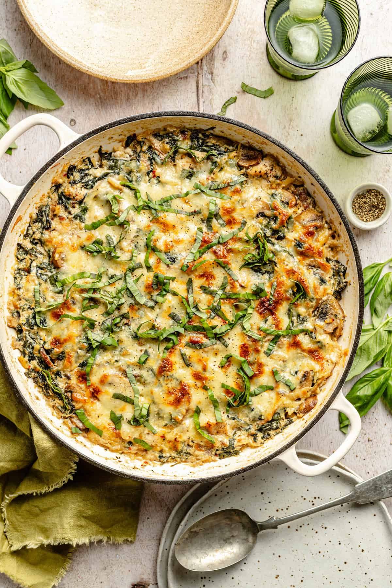

Ricotta Chicken and Orzo Skillet

Description
Make the lemongrass sauce: Add the garlic, jalapeño, and ginger to the chicken pan (you don’t have to wipe it out – save all those good flavors). Sauté until fragrant. Add the lemongrass and brown sugar; stir to combine. Add coconut cream and bring to a low, gentle simmer. Season with lime zest, lime juice, and salt.
Ingredients
- 2 tbs olive oil
- 1 lb boneless skinless chicken breast, cut into 1 inch cubes
- 1 teaspoon salt
- 1/2 teaspoon black pepper
- 1 teaspoon italian seasoning
- 1/2 teaspoon crushed red pepper flakes
- 2 garlic cloves, minced
- 1 large shallot, halved and thinly sliced
- 8 ounces baby bella mushrooms, thinly sliced
- 4 cups baby spinach, packed
- 1 cup uncooked orzo pasta
- 1/2 cup dry white wine
- 2 cups low sodium chicken broth
- 1 cup shredded mozzarella
Steps
- Preheat the oven to 375℉.
- Heat the oil in a large, oven safe skillet (I use a 3.5 qt braiser) over medium-high heat. Add the chicken, salt, pepper, Italian seasoning, and crushed red pepper flakes and toss to combine. Spread the chicken into a single layer and cook, tossing occasionally until the chicken is golden brown. It doesn’t have to be fully cooked, as it will continue to cook in the oven, but you want a nice color to it. Transfer the cooked chicken to a clean plate and set aside.
- Add the garlic, shallot, and mushrooms and continue to cook, tossing occasionally, until the mushrooms begin to soften and the shallots are tender, about 4 minutes.
- Add the garlic, shallot, and mushrooms and continue to cook, tossing occasionally, until the mushrooms begin to soften and the shallots are tender, about 4 minutes.
- Add the white wine and cook until reduced by half, about 2 minutes.
- Add the orzo and toss to combine. Add the broth, lemon zest, lemon juice, salt, and ricotta cheese and stir until well combined. Bring to a simmer and add the cooked chicken back into the skillet. Toss until well combined then spread the contents of the skillet into a single layer. Sprinkle the top with the mozzarella.
- Transfer to the oven and bake until the orzo is cooked through and tender and the cheese and brown and bubbly, about 15 minutes. Remove from the oven and let rest for 3 to 5 minutes to allow the sauce to settle and thicken even further.